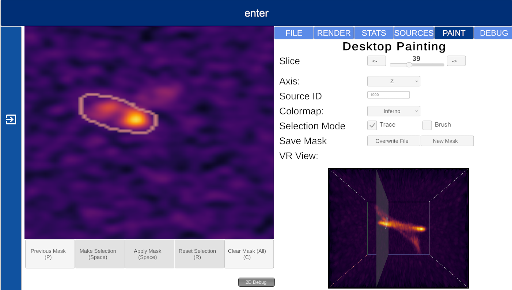
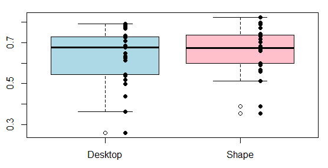
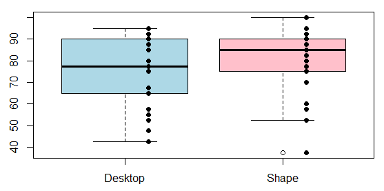

Shape Selection
Shape selection is a very simple and intuitive method that gives the user the ability to make very complex shaped volumetric selections. This selection method
lets the user build their volumetric selection with a combination of adding and subtracting shapes, which can overlap each other. When the user confirms
their shape placement and starts the selection, everything within the green adding shapes is selected and then any selection within a red subtracting shape is
subsequently deselected.
This mechanism means that very complex shapes can be created from simple base shapes as building blocks. Subtracting shapes take precedence and can be used
to fine-tune the adding shapes selection. The user can choose from 5 different shapes (and can place as many as they like): a Cube, Sphere, Rectangular Prism,
Pyramid, and a Poly (asymmetrical shape with uncommon edges to help with selection).
These shapes can be placed at any angle and can be rotated easily by simply grabbing it and twisting the controller. Additionally, these shapes can be resized
and can be placed after you have already made a selection, meaning you can keep fine-tuning until the selection is as desired.
Desktop Selection

Desktop selection allows users to make 3D volumetric selections, on a 2D interface. This is achieved as the 3D data cube representing the region of space, is
broken up into voxels (3D pixels). What the desktop method does is look down one of the three axis of the data cube and take out a single layer of voxels
(as represented by the panel inside the bottom right image in the display). This slice is then displayed (top right of the display) for the user to see, allowing the user to map
the slice they are looking at, to the location it is at in the data cube. The slice being displayed can be changed, allowing the user to cycle through the entire
data cube. The axis being looked down can also change, rotating the data cube and subsequent slices to get a different perspective.
While looking at a slice, the user can draw around the area they wish to select, making a temporary selection (shown in grey). Users then have the option to apply the selection
to that region or to remove any selections within that region. When the user navigates to the next slice, they can copy the previous slice’s mask, helping save time
if the desired area has not changed much. Selections are represented on the slice with an orange outline and in the data cube with highlighted voxels.
The desktop selection served as the base comparison selection method against all three Virtual Reality (VR) selection methods and does not require any VR equipment.
However, the selection you make is visible in real-time if you decide to enter the VR environment, as well as shown on the bottom right image in the display.
Experiment Results
F1 Score results
MCC results
Completion Time results (s)
Usability results
The experiment results displayed above, while being statistically insignificant, still gave valuable insight into the comparison between Shape and Desktop selection. The F1 Score and MCC results show that the two methods had similar accuracy, and the efficiency (completion time) shows Desktop selection being quicker. Conversely, Shape selection usability scores were better and more condensed than Desktop selection. This overall disparity shows that there is no clear evidence to support volumetric selection being more beneficial than desktop selection (and vice-versa). An in depth discussion on the results and findings can be found in the final paper, which gives more insight into the experimental results, such as the challenges faced specifically due to the VR environment, and the significant improvement found in Shape selection when looking at a certain data cube only. Future experimentation would be beneficial, and focus should be put on ensuring proper training and giving the participants more complex data cubes to make their selections from.